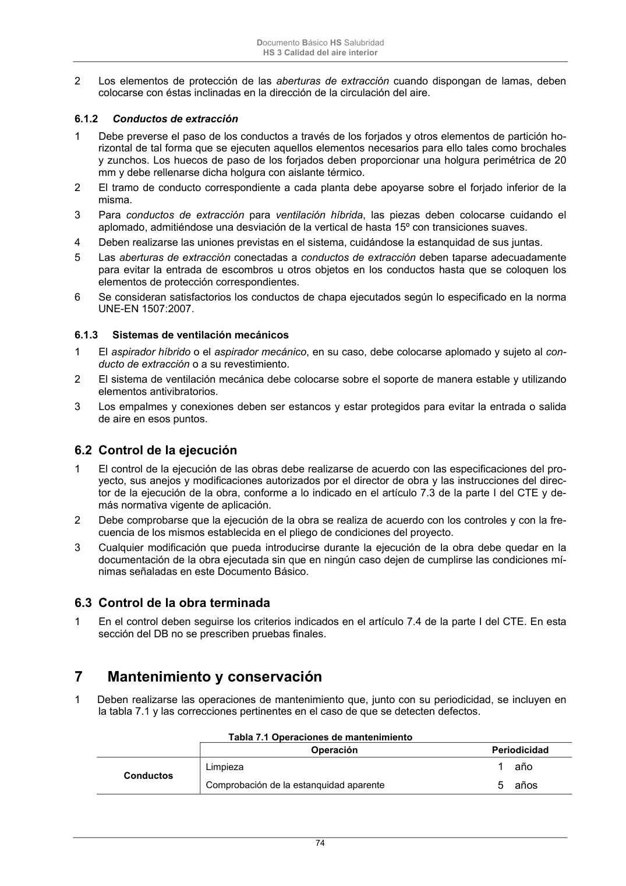
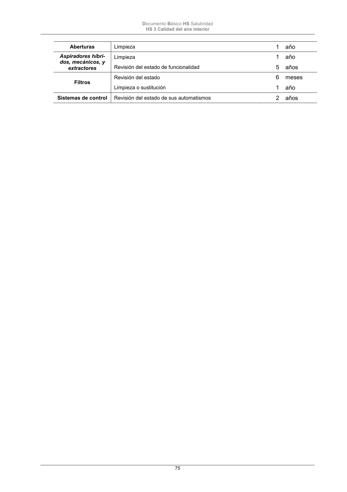

DB-HS · Mantenimiento y conservación · versión 2022-06-14 · capa oficial
Formatos: JSON compacto · Markdown · PDF fuente
Ámbito del documento · texto del ámbito · documento y tablas
ID técnico a0162 · PDF pág. 74-75 · jerarquía no validada por persona · contrastado con el literal de la página 74 (candidato tipográfico); no validado por persona · padre: raíz
Mantenimiento y conservación 1 Deben realizarse las operaciones de mantenimiento que, junto con su periodicidad, se incluyen en la tabla 7.1 y las correcciones pertinentes en el caso de que se detecten defectos. Tabla 7.1 Operaciones de mantenimiento Operación Periodicidad Conductos Limpieza 1 año Comprobación de la estanquidad aparente 5 años Documento Básico HS Salubridad HS 3 Calidad del aire interior 75 Aberturas Limpieza


PDF fuente redistribuible: copia fiel enlazada en esta página (SHA256 verificado).